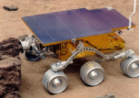
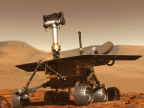
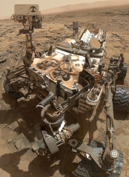
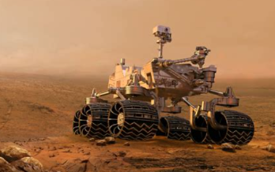

NASA has launched multiple missions to the planet Mars. It has sent rovers there to scan and collect information on the surface of the red planet. They have multiple tools to analyze the chemical compositions of the rocks on Mars’s surface.
ㅤㅤㅤㅤㅤㅤㅤㅤㅤㅤㅤㅤㅤㅤㅤㅤㅤㅤㅤㅤㅤㅤㅤ
It was part of the Mars Pathfinder Mission. It weighs 23 pounds, and it has a very, very slow top speed of 0.02mph. It explored the Ares Vallis location on Mars. This area was suspected to have signs of an ancient flood, which caused many rocks and dirt from different Mars locations to be placed relatively closer to each other, which would make it easier for the rover to get samples. Sojourner’s information indicated signs of wetness on Mars in the past.
ㅤㅤㅤㅤㅤㅤㅤㅤㅤㅤㅤㅤㅤㅤㅤㅤㅤㅤㅤㅤㅤㅤㅤ
Spirit and Opportunity are two twin rovers that were used to explore Mars. After Sojourner’s information, NASA scientists wanted to check for signs of water on Mars. They landed on opposite sides of Mars. Spirit in Gusev Crater, and there the Rover found many signs of possible water in the past. Evidence of volcanic and geothermal activity were also found by Spirit. Opportunity landed on the other side of Mars in a location called Meridiani Planum. The rocks there were found to possibly contain a mineral known as grey hematite. From the information Opportunity collected, it was inferred that the landing location used to be a sea shore.
These two rovers found evidence of water on Mars, and the evidence they collected showed that Mars used to look a lot like Earth. It also used to have underground water, and water vapor - like Earth, but dried up.
ㅤㅤㅤㅤㅤㅤㅤㅤㅤㅤㅤㅤㅤㅤㅤㅤㅤㅤㅤㅤㅤㅤㅤ
Curiosity was the largest of all the rovers. Its wheel diameter was also very huge, measuring 20 inches in size. It also had a lot of scientific instruments with it, including a mini-drill and a device that could analyze the composition of powder from the drill. It also had radiation detectors that indicated that the radiation on Mars was very high. Among all the rovers, Curiosity had the most cameras- an astounding 17! Curiosity’s landing location was Gale Crater.
ㅤㅤㅤㅤㅤㅤㅤㅤㅤㅤㅤㅤㅤㅤㅤㅤㅤㅤㅤㅤㅤㅤㅤ
Because of the signs of life and water that the previous rovers collected, Perseverance was sent to test a new method that could be used to synthesize oxygen from the C02-rich Martian Atmosphere. If it works, it could pave the way for humans to land on Mars someday.
Perseverance landed in Jezero Crater, because there have been inferences that this used to be a water delta.
